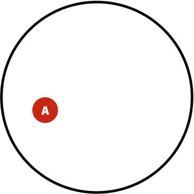
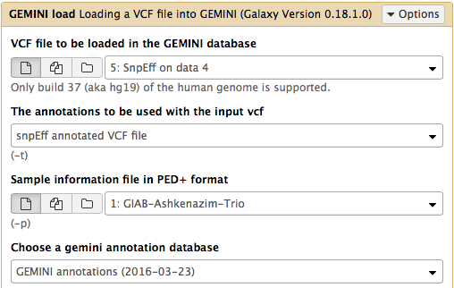
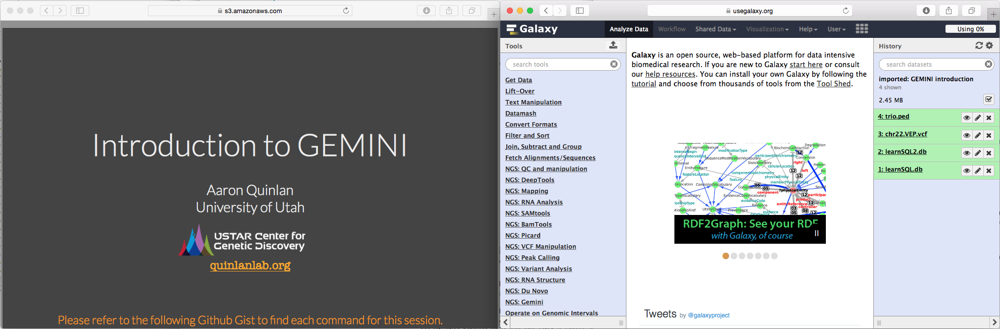

Variant calling: Diploid case
Overview
QuestionsObjectives
- What is the pipeline of the processes for variant calling and processing it?
Requirements
- Identification of the genetic variation using the variant calling
- Using FreeBayes calls for variants generating
- Quering with GEMINI
Time estimation: 1d/3h/6h
Much of Galaxy-related features described in this section have been developed by Björn Grüning (@bgruening) and configured by Dave Bouvier (@davebx).
Introduction
Variant calling is a complex field that was significantly propelled by advances in DNA sequencing and efforts of large scientific consortia such as the 1000 Genomes. Here we summarize basic ideas central to Genotype and Variant calling. First, let’s contrast the two things although they often go together:
- Variant calling - identification of positions where the sequenced sample is different from the reference sequence (or reference genome graph);
- Genotype calling - identifying individual’s genotype at variable sites.
A typical workflow for variation discovery involves the following steps (e.g., see Nielsen et al. 2011):
- Mapping reads against the reference genome;
- Thresholding BAM datasets by, for example, retaining paired, properly mapped reads;
- Performing quality score recalibration;
- Performing realignment;
- Performing variant calling/genotype assignment;
- Performing filtering and genotype quality score recalibration;
- Annotating variants and performing downstream analyses.
However, continuing evolution of variant detection methods has made some of these steps obsolete. For instance, omitting quality score recalibration and re-alignment (steps 3 and 4 above) when using haplotype-aware variant callers such as FreeBayes does not have an effect on the resulting calls (see Brad Chapman’s methodological comparisons at bcbio
Agenda
In this tutorial, we will deal with:
How does SNP calling and genotyping work?
Before going forward with an actual genotype calling in Galaxy let’s take a look as some basic ideas behind modern variant callers.
SNP calling and genotyping examples:
Consider a set of sequencing reads derived from a diploid individual:
REFERENCE: atcatgacggcaGtagcatat
--------------------------------
READ1: atcatgacggcaGtagcatat
READ2: tgacggcaGtagcatat
READ3: atcatgacggcaAtagca
READ4: cggcaGtagcatat
READ5: atcatgacggcaGtagc
The capitalized position contains a G->A transition. So, in principle this can be a heterozygous site with two alleles G and A. A commonly used naïve procedure would define a site as heterozygous if there is a non-reference allele with frequency between 20% and 80%. In this case A is present in 1/5 or 20% of the cases, so we can say that this is a heterozygous site. Yet it is only represented by a single read and is hardly reliable. Here are some of the possibilities that would explain this variant. It can be:
- A true variant;
- A library preparation artifact (e.g., a PCR error);
- A base call error;
- A misalignment (though unlikely in the above example).
The modern variant callers attempt to assign a reliability estimate for each genotype call. This is done using Bayes reasoning.
Tip: Further reading on
For a great visual explanation see blog by Oscar Bonilla). Here we present a >SNP-relevant “translation” on this explanation (with inspiration from Erik Garrison).
Suppose you have A samples with a variant in a population. You are performing re-sequencing and observe a variant in B of your sequencing reads. We want to estimate the probability of having the real polymorphism A given our observations in B. The logic is as follows:
-
The probability of having polymorphism A in the population is *P(A) = A / U *; -
The probability of seeing a variant given our identification approach (i.e., sequencing) is *P(B) = B / U *; -
Now, the probability of having a variant and it being observed in our sequencing data is the overlap between A and B sets *P(AB) = AB / U *.
| Polymorphisms | Variant Calls | Polymorphisms and Variant Calls |
|---|---|---|
|  |  |
 |
Questions
- What is the probability of a having a real polymorphism A given our observation of variants in reads B? In other words what is the probability of A given B? Or, as stated in the original blog: “given that we are in region B what is the probability that we are in the region AB?”
Now, let’s ask an opposite question. Given a true polymorphism A what are the chances that we do detect it (i.e., find ourselves in AB)?
Click to view answer
P(A|B) = |AB|/|B|.
Dividing by |U|: P(A|B) = (|AB|/|U|)/(|B|/|U|).
Because we know that P(AB) = |AB|/|U| and P(B) = |B|/|U|, we can rewrite the equation in the previous bullet point as P(A|B) = P(AB)/P(B)
It will be P(B|A) = P(AB)/P(A).
So, because we know that P(A|B) = P(AB)/P(B) and we just reasoned that P(B|A) = P(AB)/P(A), we can say that P(A|B)P(B) = P(B|A)P(A) leading us to the Bayes formula P(A|B) = P(B|A)P(A)/P(B).
Translating this into "genomics terms" the probability of having a genotype G given reads R is: P(G|R) = P(R|G)P(G)/P(R). Because in a given calculation of P(G|R) reads are fixed we can re-write the Bayes formula in the following way P(G|R) ~ P(R|G)P(G) with P(R) becoming a constant.
 This leaves us with the need to estimate two things:
This leaves us with the need to estimate two things:
-
*P(R G)*, the data likelihood; - P(G), the prior probability for the variant.
In the simplest case we can estimate these as follows:
P(R|G)
| Suppose Ri is a base in read i corresponding to a genome position with genotype G. The probability of seeing Ri given G, *P(Ri | G), is given by the quality score of *Ri (the quality scores are given by base calling software and reported as phred scores). Thus the genotype likelihood *P(R | G)* is the product of *P(Ri | G)* over all i. In reality however there are many other sources of uncertainty (in addition to base qualities) that are incorporated in the calculation of data likelihoods including NGS technology-related issues, dependency of error rates on substitution type (e.g., transitions versus transversions), sequencing context etc… |
P(G) - a single sample case
One can assign an equal probability to all possible genotypes, or to source this information based on previously obtained knowledge containing in a database, such as dbSNP. In this case (as exemplified in Nielsen et al. we may, for instance, have a site with a G/T polymorphism and genotypes GG, TT, and GT having frequencies of 0.45, 0.45, 0.09, respectively. We will use these values as priors.
P(G) - a multi-sample case
Genotype calling reliability can be significantly improved when analyzing multiple samples jointly. In this case genotype frequencies can be inferred from allele frequencies using Hardy-Weinberg equilibrium (HWE). The following example (again from Nielsen et al.) illustrates this idea: suppose you are calling genotypes for a single individual using a combination of multiple samples. There are two genotypes, AT and AA, with equally large genotype likelihoods. If, however, in our collection of multiple samples the frequency of A is 1% (p = 0.01; q = 1 - p = 0.99), then from the HWE we have:
| AA (p2) | AT (2pq) | TT (q2) |
|---|---|---|
| 0.0001 | 0.0198 | 0.9801 |
This makes it highly unlikely that AA is a true genotype of this individual.
Calling with FreeBayes
FreeBayes is an open source variant caller that has been battle tested by the 1000 Genomes community and is extensively used today (also see bcbio). It has a number of features that simply variant discovery workflows. These include (from FreeBayes github page):
- Indel realignment is accomplished internally using a read-independent method, and issues resulting from discordant alignments are dramatically reducedy through the direct detection of haplotypes;
- The need for base quality recalibration is avoided through the direct detection of haplotypes. Sequencing platform errors tend to cluster (e.g. at the ends of reads), and generate unique, non-repeating haplotypes at a given locus;
- Variant quality recalibration is avoided by incorporating a number of metrics, such as read placement bias and allele balance, directly into the Bayesian model;
- Ability to incorporate non-diploid cases such as pooled datasets or data from polyploid samples.
Freebayes is a haplotype-based variant caller. This implies that instead of looking at an individual positions within an alignment of reads to the reference genome, it looks at a haplotype window, length of which is dynamically determined (see section 3.2. in FreeBayes manuscript):
| Haplotype-based calling |
|---|
 |
Looking at a haplotype window makes misalignments tolerable. In this case a low complexity poly(A) stretch is misaligned. As a result looking at individual positions will result in calling multiple spurious varians. In the case of FreeBayes looking at a haplotype identifies two alleles (this is a diploid example) A(7) and A(6), while A(8) is likely an error. Image by Erik Garrison |
Let’s try it
The data
In this example we will perform variant calling and annotation using genome in the bottle data. Specifically, we will use Ashkenazim Father-Mother-Son trio data from the Personal Genome Project:
- HG002- NA24385 - huAA53E0 (son)
- HG003- NA24149 - hu6E4515 (father)
- HG004- NA24143 - hu8E87A9 (mother)
Yet for a quick tutorial these datasets are way too big, so we created a downsampled dataset. This dataset was produced by mapping the trio reads against hg19 version of the human genome, merging the resulting bam files together (we use readgroups to label individual reads so they can be traced to each of the original individuals), and restricting alignments to a small portion of chromosome 19 containing the POLRMT gene.
Hands-on: Variant calling
- Import the data into your history
- Specify the used genome for mapping
- Click on Edit attributes (pencil icon on right panel)
- Select
Human Feb 2009on Database/Build- Save it
- Import the reference genome
- Go on Data Libraries in Shared data (top panel on Galaxy’s interface)
- Click on Training Data
- Select
hg19- Click on Import selected datasets into history (just below the top panel)
- Import it
- Convert it from 2bit to fasta with twoBitToFa from Convert Formats
Generating and post-processing FreeBayes calls
Hands-on: Generating FreeBayes calls
- Select FreeBayes from Phenotype Association section of the tool menu (left pane of Galaxy’s interface)
- Make sure the top part of the interface looks like shown below. Here we selected
GIAB-Ashkenazim-Trio-hg19as input and set Using reference genome tohg19and Choose parameter selection level to5. Complete list of all options:
- Scrolling down to Tweak algorithmic features? click
Yesand set Calculate the marginal probability of genotypes and report as GQ in each sample field in the VCF output toYes. This would help us evaluating the quality of genotype calls:


This produces a dataset in VCF format containing 35 putative variants. Before we can continue we need to post-process this dataset by breaking compound variants into multiple independent variants with VcfAllelicPrimitives tool found within VCF Tools section. This is necessary for ensuring the smooth sailing through downstream analyses:
Hands-on: Post-processing
- Select FreeBayes output as the input for this tool
- Make sure Maintain site and allele-level annotations when decomposing and Maintain genotype-level annotations when decomposing are set to
YesVCFAllelicPrimitives generated a VCF files containing 37 records (the input VCF only contained 35). This is because a multiple nucleotide polymorphism (
TAGG|CAGA) at position 618851 have been converted to two:
Before After chr19 618851 . TAGG CAGA 81.7546
chr19 618851 . T C 81.7546chr19 618854 . G A 81.7546
Annotating variants with SnpEff
At this point we are ready to begin annotating variants using SnpEff. SnpEff, a project maintained by Pablo Cingolani “…annotates and predicts the effects of variants on genes (such as amino acid changes)…” and so is critical for functional interpretation of variation data.
Annotating variants
- Download
hg19database with SnpEff Download - Launch annotation of your variants with SnpEff from Annotation, using the downloaded database (reference genome from your history)
SnpEff will generate two outputs: (1) an annotated VCF file and (2) an HTML report. The report contains a number of useful metrics such as distribution of variants across gene features

or changes to codons

Manipulating variation data with GEMINI
Now that we have an annotated VCF file it is time to peek inside our variation data. Aaron Quinlan, creator of GEMINI, calls it Detective work.
Loading data into GEMINI
The first step is to convert a VCF file we would like to analyze into a GEMINI database. For this we will use GEMINI Load tool from Gemini section. GEMINI takes as input a VCF file and a PED file describing the relationship between samples. In the case of our dataset the PED file looks like this (second imported file):
#family_id sample_id paternal_id maternal_id sex phenotype ethnicity
family1 HG004_NA24143_mother -9 -9 2 1 CEU
family1 HG003_NA24149_father -9 -9 1 1 CEU
family1 HG002_NA24385_son HG003_NA24149_father HG004_NA24143_mother 1 2 CEU
Hands-on: Loading data
So let’s load data into GEMINI by setting VCF and PED inputs

This creates a sqlite database. To see the content of the database use GEMINI_db_info:
This produce a list of all tables and fields in the database.
Querying GEMINI database
GEMINI database is queried using the versatile SQL language (more on SQL here). In Galaxy’s version of GEMINI this is done using GEMINI_query tool. Within this tool SQL commands are typed directly into the The query to be issued to the database text box. Let’s begin getting information from some of the tables we discovered with GEMINI_db_info tool above.
Tip: Gemini tutorials
The examples below are taken from “Intro to Gemini” tutorial. For extensive documentation see “Querying GEMINI”.
Hands-on: Selecting “novel” variants that are not annotated in dbSNP database
Type
SELECT count(*) FROM variants WHERE in_dbsnp == 0into The query to be issued to the databaseAs we can see from output there are 21 variants that are not annotated in dbSNP
Find variants in POLRMT gene
The query
SELECT * FROM variants WHERE filter is NULL and gene = 'POLRMT'will produce output with very large number of columns. To restrict the number of columns to a manageable set let’s use this command:SELECT rs_ids, aaf_esp_ea, impact, clinvar_disease_name, clinvar_sig FROM variants WHERE filter is NULL and gene = 'POLRMT'(column definitions can be found here)
Output shows variants found within the POLRMT gene.
Querying genotypes
GEMINI provides access to genotype, sequencing depth, genotype quality, and genotype likelihoods for each individual (subjectID):
Querying
-
gt_types.subjectID- three types of genotype types:HOM_REF,HET,HOM_ALT; -
gt_quals.subjectID- genotype quality -
gt_depths.subjectID- total number of reads in this subject at position -
gt_ref_depths.subjectID- number of reference allele reads in this subject at position -
gt_alt_depths.subjectID- number of alternate allele reads in this subject at position
Questions
- At how many sites does child have a non-reference allele?
- At how many sites both father and son have non reference alleles?
List genotypes for father and son where they have non-reference alleles.
Click to view answers
- .
To answer this question we will use two fields of GEMINI_query interface:
Type `SELECT * from variants` into The query to be issued to the database
Type `gt_types.HG002_NA24385_son <> HOM_REF` into Restrictions to apply to genotype values
Here is an example. It will generate this output- Typing the same expression `SELECT * from variants` into The query to be issued to the database and `(gt_types.HG002_NA24385_son <> HOM_REF AND gt_types.HG003_NA24149_father <> HOM_REF)` into Restrictions to apply to genotype values will generate this output
.- Typing `SELECT gts.HG002_NA24385_son, gts.HG003_NA24149_father from variants` into The query to be issued to the database and `(gt_types.HG002_NA24385_son <> HOM_REF AND gt_types.HG003_NA24149_father <> HOM_REF)` into Restrictions to apply to genotype values will generatethis output
.
{kind=link}
Using wildcards
Wildcards simply writing SQL expressions when searching across multiple terms. The syntax for genotype filter wilcards is COLUMN).(SAMPLE_WILDCARD).(SAMPLE_WILDCARD_RULE).(RULE_ENFORCEMENT).. Let’s look at few examples.
Question
At which variants are every sample heterozygous?
Click to view answer
Type `SELECT chrom, start, end, ref, alt, gene, impact, (gts).(*) FROM variants` into The query to be issued to the database and `(gt_types).(*).(==HET).(all)` into Restrictions to apply to genotype values. Here we use wildcards for the query (`(gts.*)` = get genotypes for all samples) and genotype filtering (`(gt_types).(*).(==HET).(all)`, the all operator implies that want results for all afftected individuals). It will generate this output.
Going further
This short tutorial should give you an overall idea on how generate variant data in Galaxy and process it with GEMINI. Yet there is much more to learn. Below we list GEMINI tutorials and links to Galaxy libraries with relevant data.
| Tutorial | Data | Galaxy History | |
|---|---|---|---|
| Introduction | |
||
| Identifying de novo mutations underlying Mendelian disease | |
||
| Identifying autosomal recessive variants underlying Mendelian disease | |
||
| Identifying autosomal dominant variants underlying Mendelian disease | |
How to use these tutorials?
- Right click on the
 symbol and open tutorial in a new browser tab;
symbol and open tutorial in a new browser tab; - Right click on
 symbol and open Galaxy history in another new browser tab;
symbol and open Galaxy history in another new browser tab; -
When Galaxy history interface opens you will need to click Import history link highlighted with a red border in the following figure:

-
If you have a wide screen arrange browsers tabs side by side:

-
Proceed with tutorial. For example, to repeat the following command from GEMINI tutorial:

-
Use Galaxy’s GEMINI_load tool:

- and so on….
Tip: If things don’t work…
…you need to complain. Use Galaxy’s BioStar Channel to do this.
Key points
- The modern variant callers attempt to assign a reliability estimate for each genotype call. This is done using Bayes reasoning.
- FreeBayes variant caller looks at a haplotype window
- After variants have been annotated and post-processed one can manipulate the data with GEMINI queries
Useful literature
Useful information regarding this type of analysis with descriptions and paper references for the tools used in this tutorial, and literature for this analysis techniques and interpretations can be found here.
Congratulations on successfully completing this tutorial!
Feedback
Please take a moment and provide your feedback on this tutorial. Your feedback will help guide and improve future revisions to this tutorial. Feedback Form